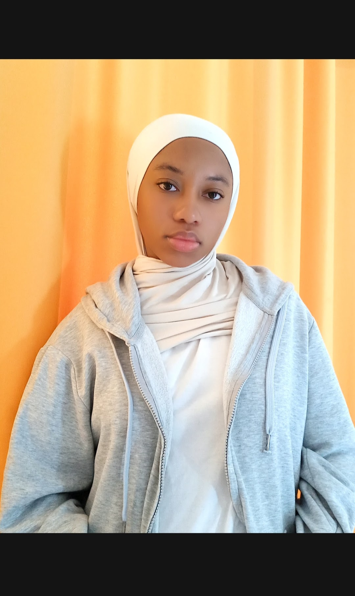
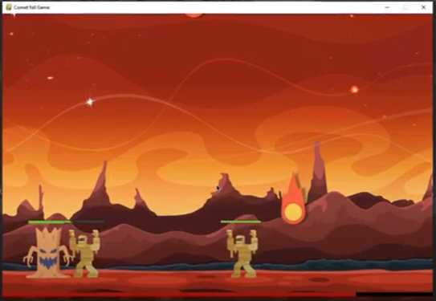

Je suis étudiante en BUT Informatique à l’IUT d’Orsay. Je suis passionnée par le développement logiciel, les interfaces graphiques et l'UX design.
Parcours Réalisation d’applications (conception, développement, validation). Apprentissage du développement logiciel, de la conception d’interfaces et des tests applicatifs.
Formation axée sur la communication, la créativité et la gestion de groupe dans le cadre d’activités pour enfants.
Découverte des bases de la programmation, des réseaux et des systèmes numériques.
Réalisation d’un site Web qui présente un lieu consacré au divertissement.
Création d’un jeu en Python.
Animation pour les enfants
Construction de mobilier pour les écoles au Maroc
Cohésion d'équipe
Email : sarah.ali.1@outlook.fr
Téléphone : 07.66.65.40.65